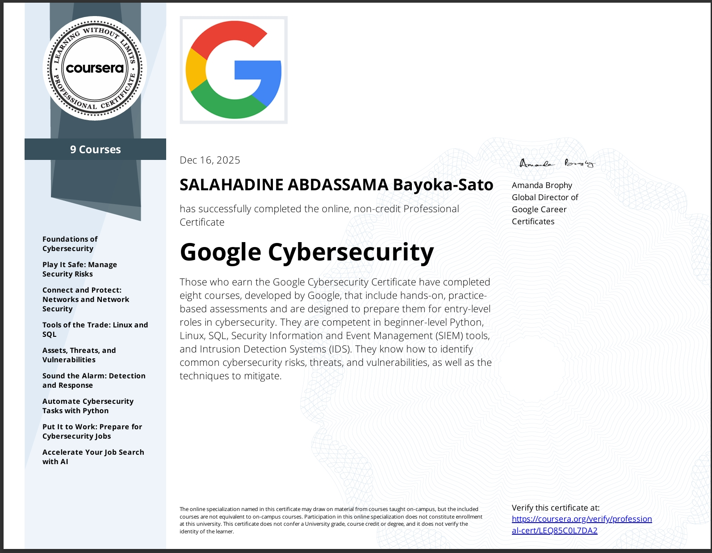
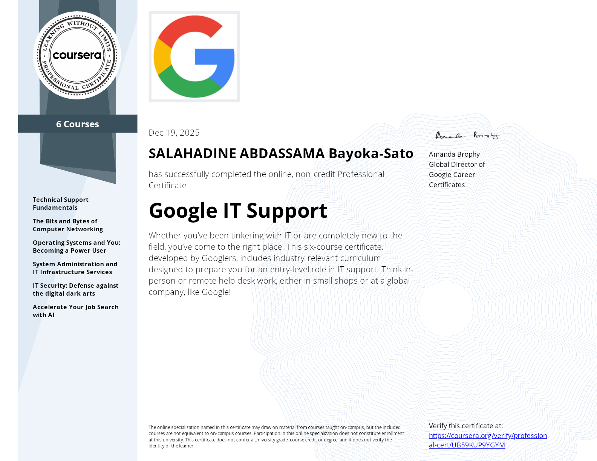
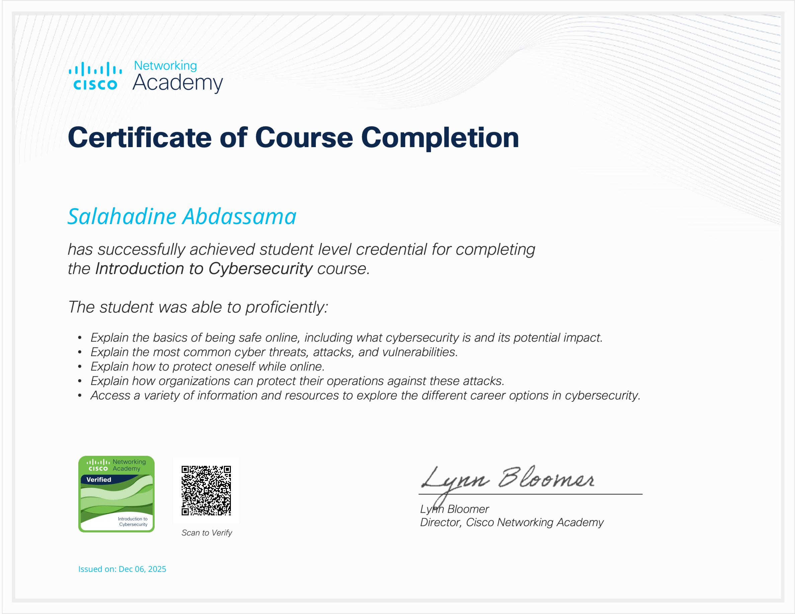
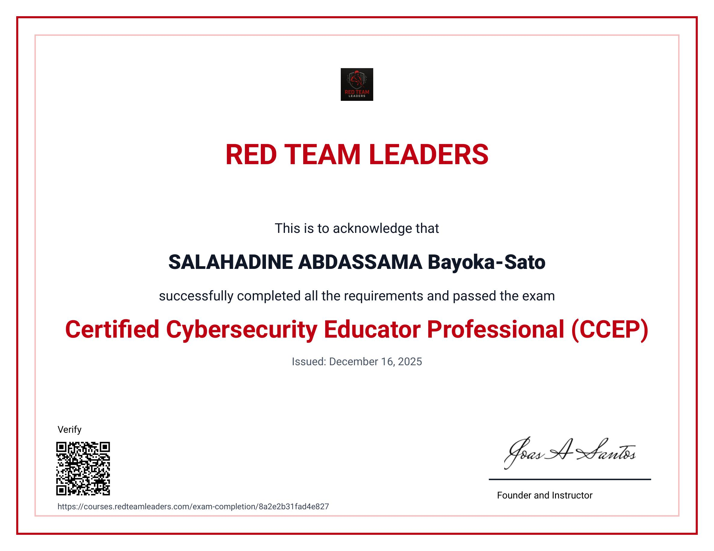

Analyse d’incidents · Sécurité réseau · Détection des menaces · SIEM




Cybersecurity Analyst – SOC / Blue Team
Spécialisé en analyse d’incidents, sécurité réseau, SIEM et analyse de logs. Expérience pratique en détection de menaces et réponse à incident.
Analyste cybersécurité certifié (Google, Cisco, Red Team Leaders), spécialisé en SOC, analyse des incidents et sécurité réseau.